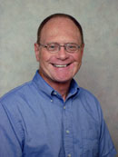

About Dr. Whalen
Bill Whalen M.D. is a Board Certified ophthalmologist who has practiced in Colorado since 1980. He has trained young ophthalmologists and family practice residents for many years as an Associate Professor of Ophthalmology. He lives in Greenwood Village with his wife, Dr. Lucy Miller. His older daughter, Coles, is a touring singer-songwriter who lives in Nashville. His younger daughter, Marita, is currently serving in the Peace Corps in West Africa.
Patient First Philosophy
Any surgical operation can be frightening and most patients are terrified of losing or damaging their vision. Whether you are interested in cataract surgery or laser vision correction, you need to be able to make an informed choice. Both my staff and I will spend as much time as you need to insure that you understand your options and are comfortable with your final choice. I will personally attend to every detail of your surgical experience, from your first evaluation to your final post-operative visit.
I have performed many thousands of surgeries over the years, but skill and experience are not enough. Our goal at United Eye Centers is to make you feel cared for as a person, not just an eyeball. I want you to be confident in your examination, secure in your diagnosis, and comfortable with your treatment. None of your concerns are too small or unimportant to be addressed.
We have all been blessed with tremendous technical advances in the diagnosis and treatment of vision problems. Both cataract surgery and laser vision correction are remarkably sophisticated, successful, and safe. United Eye Centers and Clarity Laser Vision Center offer the most advanced forms of diagnostic instrumentation and laser technology available today.
I have been traveling to Mexico since 1985 to perform volunteer surgery on the poorest of the poor. I have operated late into the night in mission churches and Mexican prisons on barefoot patients who didn’t even speak Spanish, only obscure Indian dialects. I also led two surgical missions to Romania, operating on the unfortunate orphans discovered after the fall of the dictator, Nicolae Ceausescu. We all know how lucky we are to live in the United States of America and we all need to give something back in our own way.